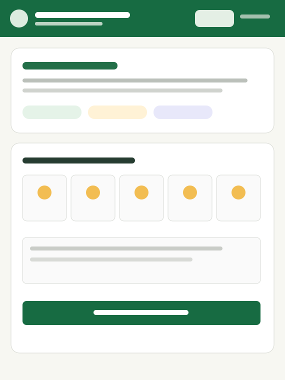
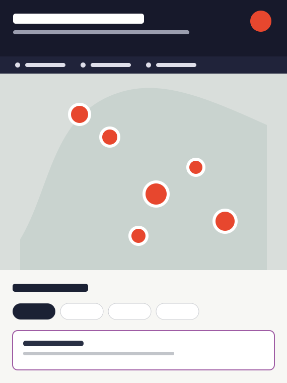
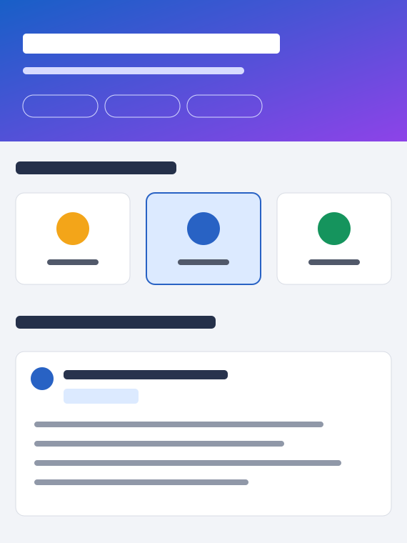

Portfolio / 2026 Taiwan
把工作做得更好。 Intro 我以網頁、資料與 AI，把公共服務及日常營運中的真實問題，轉化成能上線、有人用、持續改善 的數位產品。



PUBLIC SERVICE ● WEB APPLICATIONS ● DATA VISUALIZATION ● AI ADOPTION ● WORKFLOW DESIGN ● PUBLIC SERVICE ● WEB APPLICATIONS ● DATA VISUALIZATION ● AI ADOPTION ● WORKFLOW DESIGN ●
01 — CASE STUDIES
不是練習，真實問題 的解法。
CASE 01 PUBLIC SERVICE
讓心理支持，成為容易踏出的第一步。 為高壓工作者整合情緒評估、AI 分析、諮商資源與危機協助，並把隱私感受放在產品核心。
FOCUS 降低求助門檻
ROLE 規劃・設計・開發
FORMAT 響應式 Web App
閱讀匿名案例
CASE 02 DATA AUTOMATION
把大量房屋資料，變成一張機會地圖。 定期整理低於行情物件、區域均價與屋型資訊，將漫無目的搜尋轉變為有依據的優先篩選。
FOCUS 減少人工比對
ROLE 資料・介面・部署
STACK Python・Map
閱讀匿名案例
CASE 03 AI ADOPTION
把個人探索，轉化成組織可以複製的經驗。 記錄 AI 工具如何進入真實工作流程，讓導入不只停在口號與單次教學。
FOCUS 知識可複製
ROLE 研究・實作・整理
TOOLS AI 知識工具
閱讀匿名案例
02 — ARCHIVE
16 個上線作品，持續增加。
沒有符合條件的專案。
03 — APPROACH 我不從技術開始。什麼事情值得被改善？
01 / OBSERVE 理解現場 看見誰在使用、流程卡在哪裡，以及真正重要的結果。
02 / BUILD 快速實作 先做出可操作的核心版本，讓想法接受真實使用檢驗。
03 / ITERATE 上線迭代 根據回饋修正資訊、功能與細節，讓工具持續變得更好。